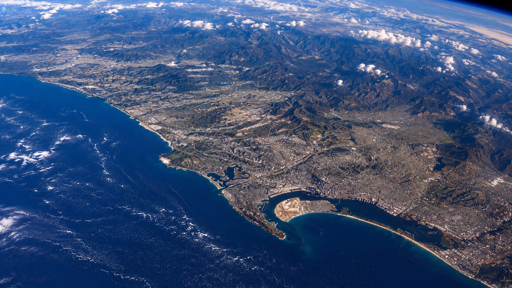
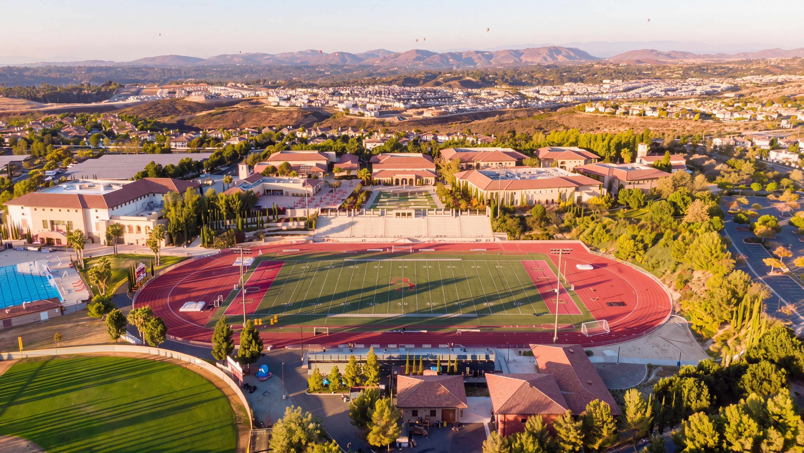

Learn how business
actually works.
Then go build one.
A two-semester institute taught by the people who do the job — founders, investors, and operators. In the fall you take apart a real company’s problem. In the spring you build a company of your own and pitch it from a stage.
Every year at DBI
What DBI is
Catholic business leaders.
Not just business leaders.
The Dons Business Institute is Cathedral Catholic’s business institute — where students serious about a career in business jump-start it in high school. Real business, taught hands-on by the industry professionals who do it for a living: founders, investors, and operators, in the room, every session.
Every session opens in prayer, and the prayer is tied to what we’re about to teach — never a formality bolted onto the front. Stewardship: we’re managing something that was entrusted to us. The dignity of work, and of the worker. Honest scales — integrity in what we measure and what we claim.
A Don was a title from the Latin Dominus — Lord. In medieval Spain it belonged to exactly two kinds of people: nobles and the clergy. Worldly standing and religious vocation, in one word. Sixty years on, it is still the only word this school calls its own. Once a Don, always a Don.
Hearing about the ethical dilemmas that come in business — it really kind of confused me at first, because you wouldn’t really expect to have to think about that. But looking deeper into it, I saw that faith is a huge part of your business journey.
Where to next